Note
Go to the end to download the full example code.
Basic pulsar analysis using Fermi-LAT data#
This example shows how to produce the phaseogram of the Crab pulsar, compute the statistics of its peaks, search for pulsations, fit the pulse profile and study the evolution of the signal with time and energy.
It uses about 10 years of public Fermi-LAT observations of the Crab pulsar (100 MeV - 1 GeV), for which the pulsar phases were already computed.
13 import matplotlib.pyplot as plt
14 import numpy as np
15 from astropy.io import fits
16
17 import ptiming_ana
18 from ptiming_ana.phaseogram import PulsarAnalysis
ptiming_ana reports the progress and the results of the analysis through
the Python logging system. This shows the messages in the terminal/notebook:
26 ptiming_ana.setup_logging()
<Logger ptiming_ana (INFO)>
Create the PulsarAnalysis object and settings#
All the settings of the analysis can be read from a configuration file:
35 h = PulsarAnalysis()
36 h.set_config("./example_data/config_tutorial.yaml")
Alternatively we can set the parameters directly#
The phase regions used to compute the statistics of the peaks (P1 and P2) and to estimate the background, the binning of the phaseogram, the time interval used to follow the evolution of the signal, the model used to fit the pulse profile and the energy binning:
47 h = PulsarAnalysis()
48 h.setBackgroundLimits([0.52, 0.87])
49 h.setPeaklimits(
50 P1_limits=[0, 0.026, 0.983, 1], P2_limits=[0.377, 0.422], P3_limits=None
51 )
52 h.setBinning(50, xmin=0, xmax=1)
53 h.setTimeInterval(tint=3600 * 24)
54 h.setFittingParams(model="dgaussian", binned=True)
55 h.setEnergybinning(
56 np.geomspace(0.1 / 1e3, 1 / 1e3, 3), do_diff=True, do_integral=False
57 ) # in TeV
Extracting phases, times and energies from file and give them to the object#
For Fermi data there is a class to read these lists and use them in the main object.
66 h.setFermiInputFile("./example_data/merged2_pulsar.fits")
But in general we can read our file (FITS, DL2, DL3…) and extract phases, times and energies as lists and read them as follows:
73 with fits.open("./example_data/merged2_pulsar.fits") as f:
74 fits_table = f[1].data
75 times = np.array(fits_table["BARYCENTRIC_TIME"], dtype=float)
76 phases = np.array(fits_table["PULSE_PHASE"], dtype=float)
77 energies = np.array(fits_table["ENERGY"], dtype=float) # in MeV
78
79 h.setListsInput(phases, times, energies / 1e6, tel="fermi", energy_units="TeV")
Run the code#
86 h.run()
2026-10-15 10:44:03 INFO [ptiming_ana.phaseogram.pulsar_analysis] Initializing...
2026-10-15 10:44:03 INFO [ptiming_ana.phaseogram.read_events] Finishing reading. Total time is 8342.590926586941 h
2026-10-15 10:44:03 INFO [ptiming_ana.phaseogram.pulsar_analysis] Calculating statistics every 1440.0 minutes...
2026-10-15 10:44:09 INFO [ptiming_ana.phaseogram.pulsar_analysis] Fitting the data to the given model...
2026-10-15 10:44:09 INFO [ptiming_ana.phaseogram.pulsar_analysis] Fit model: dgaussian
2026-10-15 10:44:09 INFO [ptiming_ana.phaseogram.pulsar_analysis] Binned fitting: True
2026-10-15 10:44:10 INFO [ptiming_ana.phaseogram.pulsar_analysis] Performing energy-dependent analysis...
2026-10-15 10:44:10 INFO [ptiming_ana.phaseogram.penergy_analysis] Creating object in energy range (TeV):0.00-0.00
2026-10-15 10:44:10 INFO [ptiming_ana.phaseogram.penergy_analysis] Calculating statistics...
2026-10-15 10:44:12 INFO [ptiming_ana.phaseogram.pulsar_analysis] Fitting the data to the given model...
2026-10-15 10:44:12 INFO [ptiming_ana.phaseogram.pulsar_analysis] Fit model: dgaussian
2026-10-15 10:44:12 INFO [ptiming_ana.phaseogram.pulsar_analysis] Binned fitting: True
2026-10-15 10:44:12 INFO [ptiming_ana.phaseogram.penergy_analysis] Creating object in energy range (TeV):0.00-0.00
2026-10-15 10:44:12 INFO [ptiming_ana.phaseogram.penergy_analysis] Calculating statistics...
2026-10-15 10:44:15 INFO [ptiming_ana.phaseogram.pulsar_analysis] Fitting the data to the given model...
2026-10-15 10:44:15 INFO [ptiming_ana.phaseogram.pulsar_analysis] Fit model: dgaussian
2026-10-15 10:44:15 INFO [ptiming_ana.phaseogram.pulsar_analysis] Binned fitting: True
2026-10-15 10:44:15 INFO [ptiming_ana.phaseogram.pulsar_analysis] FINISHED. Producing general results...
Show the results#
Overall results#
96 phaseogram = h.draw_phaseogram(phase_limits=[0, 2], colorhist="xkcd:baby blue")
97 plt.tight_layout()
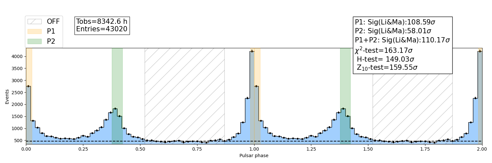
Statistics of the peaks (Li&Ma significance, number of excess events…) and results of the periodicity tests (\(\chi^2\), \(Z^2_{10}\) and H tests):
2026-10-15 10:44:15 INFO [ptiming_ana.phaseogram.pulsar_analysis] RESULTS FOR THE PEAK STATISTICS:
P1 P2 P1+P2
Significance 108.591359 58.006568 110.165719
Nex 5959.237143 2677.271429 8636.508571
Nex_error 84.220286 62.208240 105.936656
Number 6969.000000 3734.000000 10703.000000
noff 1009.762857 1056.728571 2066.491429
sign_t_ratio 1.188899 0.635077 1.206135
s/n ratio 187.534413 82.358927 189.985915
2026-10-15 10:44:15 INFO [ptiming_ana.phaseogram.pulsar_analysis] P1/P2 ratio=2.23 +/- 0.06
2026-10-15 10:44:15 INFO [ptiming_ana.phaseogram.pulsar_analysis] RESULTS FOR THE PERIODICITY SEARCH:
Chi_square_test Zn_test H_test
Statistic 26977.433752 25612.347810 27915.973962
p-value 0.000000 0.000000 0.000000
Number of $\sigma$ 163.171174 159.548517 149.027746
106 peak_statistics
Result of the fitting#
117 print(h.fit_model)
dgaussian
120 fit_result = h.show_fit_results()
121 fit_result
2026-10-15 10:44:15 INFO [ptiming_ana.phaseogram.pulsar_analysis] FITTING RESULTS:
Name Value Error
0 mu 0.992423 0.001566
1 sigma 0.026305 0.001470
2 mu_2 1.376341 0.004402
3 sigma_2 0.050986 0.004192
4 A 466.437500 0.000000
5 B 200.237289 10.903034
6 C 145.133366 11.041673
124 phaseogram = h.draw_phaseogram(
125 phase_limits=[0, 2], colorhist="xkcd:baby blue", fit=True
126 )
127 plt.tight_layout()
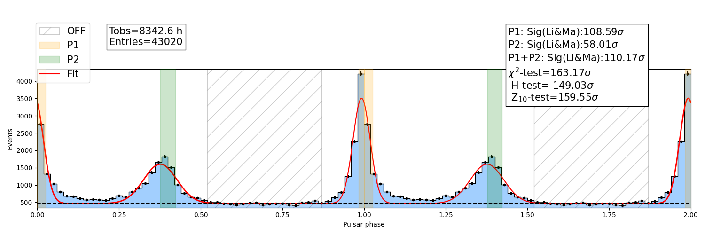
Results vs Time#
134 TimeEv = h.show_timeEvolution()
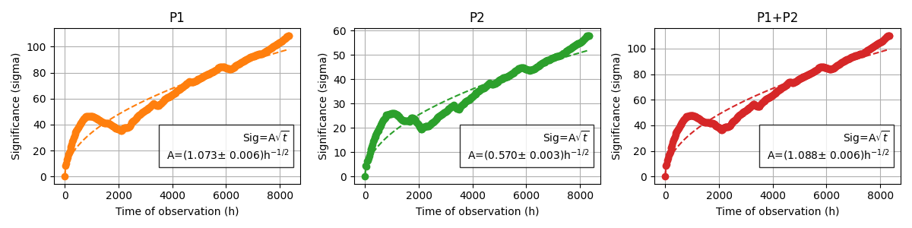
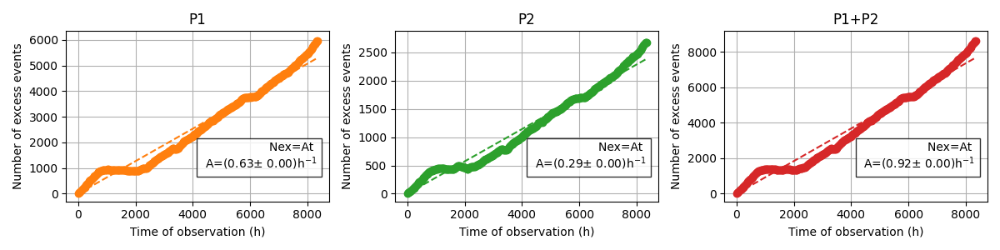
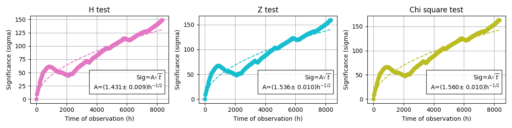
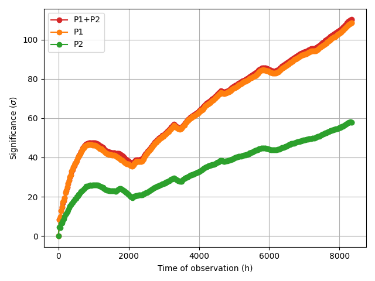
Results vs Energy#
141 energy_lightcurves = h.show_lcVsEnergy()
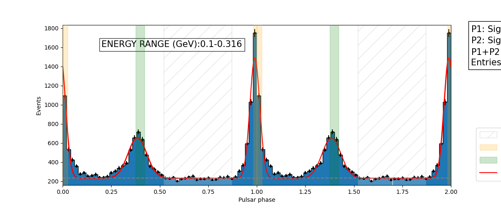
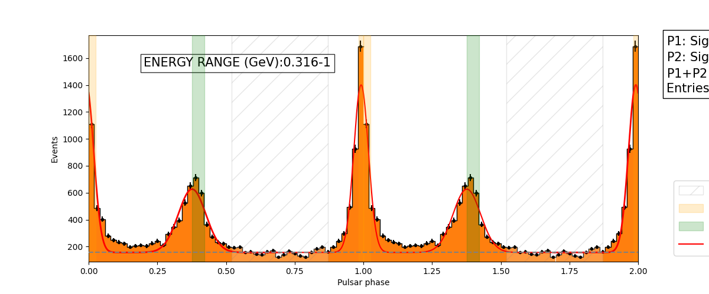
144 energy_lc = h.show_all_lc(ylimits=None)
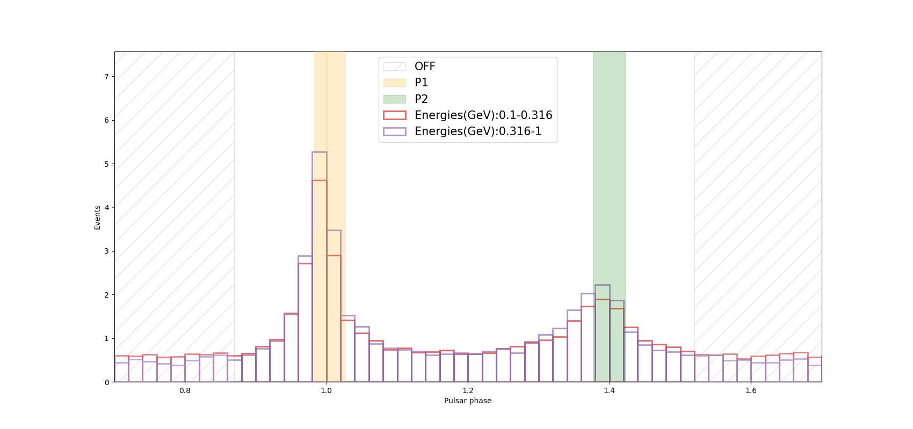
147 energy_results = h.show_EnergyPresults()
2026-10-15 10:44:16 INFO [ptiming_ana.phaseogram.penergy_analysis] Energies(GeV): 0.1-0.316
2026-10-15 10:44:16 INFO [ptiming_ana.phaseogram.pulsar_analysis] RESULTS FOR THE PEAK STATISTICS:
P1 P2 P1+P2
Significance 64.283110 32.326941 64.254439
Nex 2329.814286 994.642857 3324.457143
Nex_error 53.751332 39.787330 67.825823
Number 2828.000000 1516.000000 4344.000000
noff 498.185714 521.357143 1019.542857
sign_t_ratio 0.703795 0.353927 0.703481
s/n ratio 104.382013 43.561167 104.116125
2026-10-15 10:44:16 INFO [ptiming_ana.phaseogram.pulsar_analysis] P1/P2 ratio=2.34 +/- 0.11
2026-10-15 10:44:16 INFO [ptiming_ana.phaseogram.pulsar_analysis] RESULTS FOR THE PERIODICITY SEARCH:
Chi_square_test Zn_test H_test
Statistic 9894.812087 9398.711056 10117.135680
p-value 0.000000 0.000000 0.000000
Number of $\sigma$ 97.930413 96.234848 89.679481
2026-10-15 10:44:16 INFO [ptiming_ana.phaseogram.penergy_analysis] Energies(GeV): 0.316-1
2026-10-15 10:44:16 INFO [ptiming_ana.phaseogram.pulsar_analysis] RESULTS FOR THE PEAK STATISTICS:
P1 P2 P1+P2
Significance 72.157101 39.603539 73.624074
Nex 2428.965714 1109.057143 3538.022857
Nex_error 53.037924 38.897574 66.437898
Number 2771.000000 1467.000000 4238.000000
noff 342.034286 357.942857 699.977143
sign_t_ratio 0.790003 0.433594 0.806064
s/n ratio 131.336840 58.620170 133.726878
2026-10-15 10:44:16 INFO [ptiming_ana.phaseogram.pulsar_analysis] P1/P2 ratio=2.19 +/- 0.09
2026-10-15 10:44:16 INFO [ptiming_ana.phaseogram.pulsar_analysis] RESULTS FOR THE PERIODICITY SEARCH:
Chi_square_test Zn_test H_test
Statistic 12360.395436 11771.055229 12826.853971
p-value 0.000000 0.000000 0.000000
Number of $\sigma$ 109.750929 107.838824 100.990631
150 energy_plots = h.show_EnergyAna()
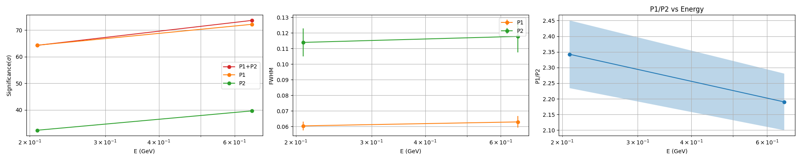
Fit vs Energy#
157 mean_energy_plot = h.show_meanVsEnergy()
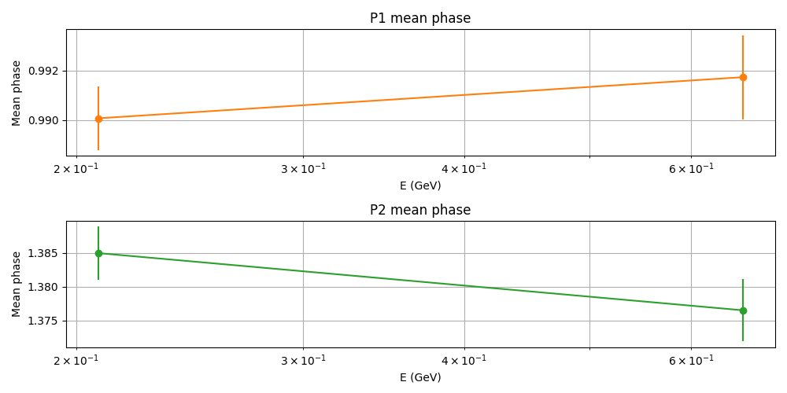
2026-10-15 10:44:17 INFO [ptiming_ana.phaseogram.penergy_analysis] Energies(GeV): 0.1-0.316
2026-10-15 10:44:17 INFO [ptiming_ana.phaseogram.pulsar_analysis] FITTING RESULTS:
Name Value Error
0 mu 0.990064 0.001285
1 sigma 0.025658 0.001199
2 mu_2 1.384944 0.003914
3 sigma_2 0.048394 0.003781
4 A 231.375000 0.000000
5 B 80.804887 3.667207
6 C 51.361385 3.643919
2026-10-15 10:44:17 INFO [ptiming_ana.phaseogram.penergy_analysis] Energies(GeV): 0.316-1
2026-10-15 10:44:17 INFO [ptiming_ana.phaseogram.pulsar_analysis] FITTING RESULTS:
Name Value Error
0 mu 0.991737 0.001711
1 sigma 0.026729 0.001598
2 mu_2 1.376496 0.004604
3 sigma_2 0.050032 0.004348
4 A 156.375000 0.000000
5 B 83.366327 4.920670
6 C 58.966419 4.808841
Total running time of the script: (0 minutes 14.073 seconds)